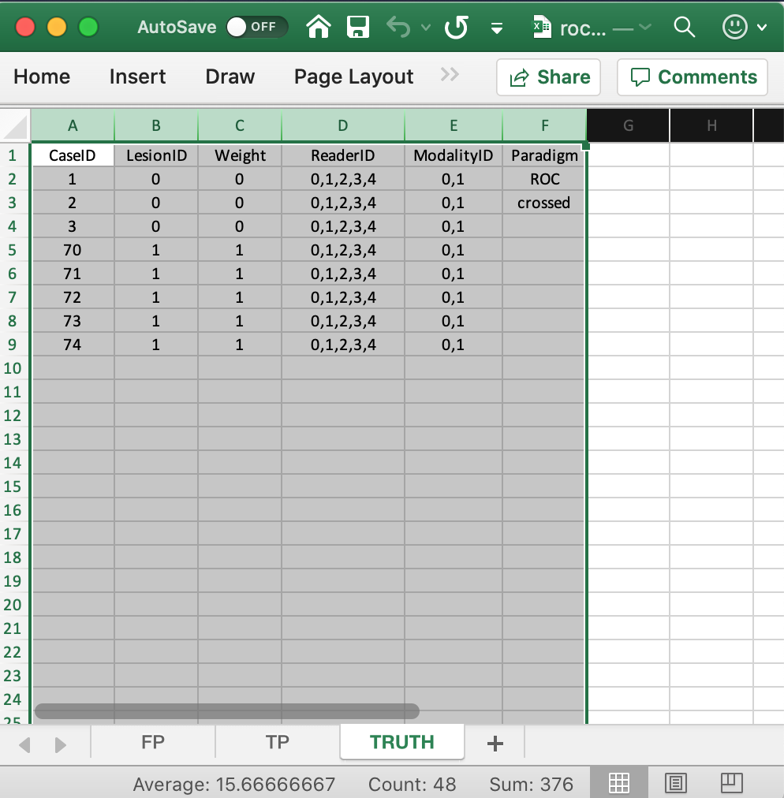
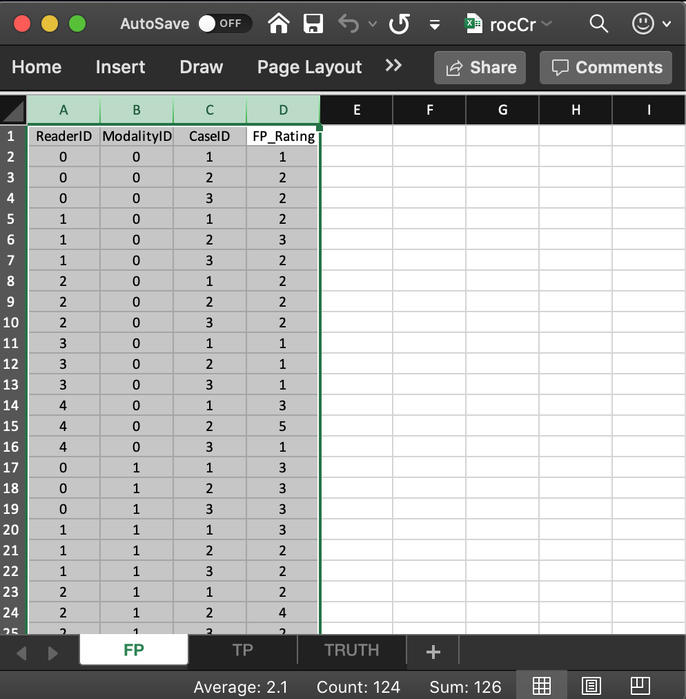
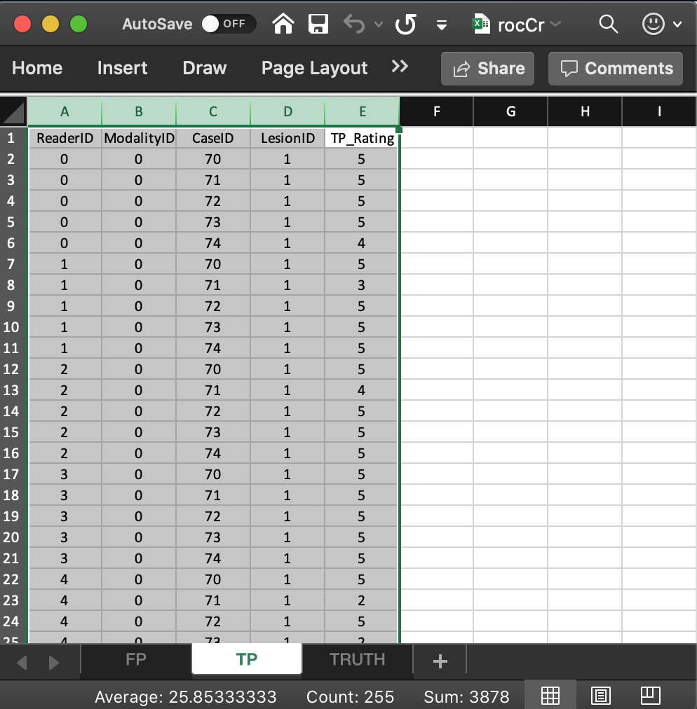

Ch00Vig1DataFormatRoc.RmdDfReadDataFile().Truth, NL or FP and LL or TP.Truth worksheetThe Truth worksheet contains 6 columns: CaseID, LesionID, Weight, ReaderID, ModalityID and Paradigm.
CaseID: unique integers, one per case, representing the cases in the dataset.LesionID: integers 0 or 1, with each 0 representing a non-diseased case and each 1 representing a diseased case.1, 2 and 3, while the diseased cases are labeled 70, 71, 72, 73 and 74. The values do not have to be consecutive integers; the only requirement is that they be unique integers.Weight: floating point; 0 or 1. This column is not used for ROC data.ReaderID: a comma-separated listing of readers, each represented by a unique integer, that have interpreted the case. In the example shown below each cell has the value 0, 1, 2, 3, 4. Each cell has to be text formatted.
ModalityID: a comma-separated listing of modalities (or treatments), each represented by a unique integer, that apply to each case. In the example each cell has the value 0, 1. Each cell has to be text formatted.
Paradigm: this colum contains two cells, ROC or FROC and crossed or split-plot. In the example shown below, the contents are ROC and crossed. It informs the software that this is an ROC dataset, and the design is crossed, meaning each reader interprets each case in each modality (in statistical terminology: modality and reader factors are crossed). The split-plot design will be discussed later.
The example shown above corresponds to Excel file inst/extdata/toyFiles/ROC/rocCr.xlsx in the project directory. Toy files are artificial small datasets intended to illustrate essential features of the data format.
rocCr <- system.file("extdata", "toyFiles/ROC/rocCr.xlsx",
package = "RJafroc", mustWork = TRUE)
x <- DfReadDataFile(rocCr, newExcelFileFormat = TRUE)
str(x)
#> List of 8
#> $ NL : num [1:2, 1:5, 1:8, 1] 1 3 2 3 2 2 1 2 3 2 ...
#> $ LL : num [1:2, 1:5, 1:5, 1] 5 5 5 5 5 5 5 5 5 5 ...
#> $ lesionVector: int [1:5] 1 1 1 1 1
#> $ lesionID : num [1:5, 1] 1 1 1 1 1
#> $ lesionWeight: num [1:5, 1] 1 1 1 1 1
#> $ dataType : chr "ROC"
#> $ modalityID : Named chr [1:2] "0" "1"
#> ..- attr(*, "names")= chr [1:2] "0" "1"
#> $ readerID : Named chr [1:5] "0" "1" "2" "3" ...
#> ..- attr(*, "names")= chr [1:5] "0" "1" "2" "3" ...newExcelFileFormat is set to TRUE as otherwise columns D - F are ignored and the dataset is assumed to be crossed, with paradigm automatically determined from the contents of the FP and TP worksheets.newExcelFileFormat = FALSE is for compatibility with older JAFROC format Excel files, which did not have these columns. Its usage is deprecated.x is a list variable with 8 members.dataType member indicates that this is an ROC dataset.LesionID column of the Truth worksheet).lesionVector, lesionID and lesionWeight members are not needed for ROC datasets.LesionID column).ReaderID column contains 0, 1, 2, 3, 4).ModalityID column contains 0, 1).These are found in the FP or NL worksheet, see below. 
It consists of 4 columns, each of length 30 (= # of modalities times number of readers times number of non-diseased cases). * ReaderID: the reader labels: 0, 1, 2, 3 and 4. Each reader label occurs 6 times (= # of modalities times number of non-diseased cases). * ModalityID: the modality or treatment labels: 0 and 1. Each label occurs 15 times (= # of readers times number of non-diseased cases). * CaseID: the case labels for non-diseased cases: 1, 2 and 3. Each label occurs 10 times (= # of modalities times # of readers). The label of a diseased case cannot occur in the FP worksheet. * FP_Rating: the floating point ratings of non-diseased cases. Each row of this worksheet yields a rating corresponding to the values of ReaderID, ModalityID and CaseID for that row.
These are found in the FP or NL worksheet, see below. 
It consists of 5 columns, each of length 50 (= # of modalities times number of readers times number of diseased cases).
ReaderID: the reader labels: 0, 1, 2, 3 and 4. Each reader label occurs 10 times (= # of modalities times number of diseased cases).ModalityID: the modality or treatment labels: 0 and 1. Each label occurs 25 times (= # of readers times number of diseased cases).LesionID: For an ROC dataset this column contains fifty 1’s (each diseased case has one lesion).CaseID: the case labels for non-diseased cases: 70, 71, 72, 73 and 74. Each label occurs 10 times (= # of modalities times # of readers). The label of a non-diseased case cannot occur in the TP worksheet.TP_Rating: the floating point ratings of diseased cases. Each row of this worksheet yields a rating corresponding to the values of ReaderID, ModalityID, LesionID and CaseID for that row.NL member of dataset and the FP worksheetx$NL is an array with dim = c(2,5,8,1).x$NL[1,5,2,1], i.e., 5, corresponds to row 15 of the FP table, i.e., to ModalityID 0, ReaderID 4 and CaseID 2.x$NL[2,3,2,1], i.e., 4, corresponds to row 24 of the FP table, i.e., to ModalityID 1, ReaderID 2 and CaseID 2.-Inf. For example the value of x$NL[2,3,4,1] is -Inf. This is because there are only 3 non-diseased cases. The extra length is needed for compatibility with FROC datasets.LL member of dataset and the TP worksheetx$LL is an array with dim = c(2,5,5,1).x$LL[1,1,5,1], i.e., 4, corresponds to row 6 of the TP table, i.e., to ModalityID 0, ReaderID 0 and CaseID 74.x$LL[1,2,2,1], i.e., 3, corresponds to row 8 of the TP table, i.e., to ModalityID 0, ReaderID 1 and CaseID 71.x$LL: any(x$LL == -Inf) = FALSE.Chakraborty, Dev P. 2017. Observer Performance Methods for Diagnostic Imaging - Foundations, Modeling, and Applications with R-Based Examples. Book. Boca Raton, FL: CRC Press.
Metz, C.E. 1978. “Basic Principles of Roc Analysis.” Journal Article. Seminars in Nuclear Medicine 8 (4): 283–98.